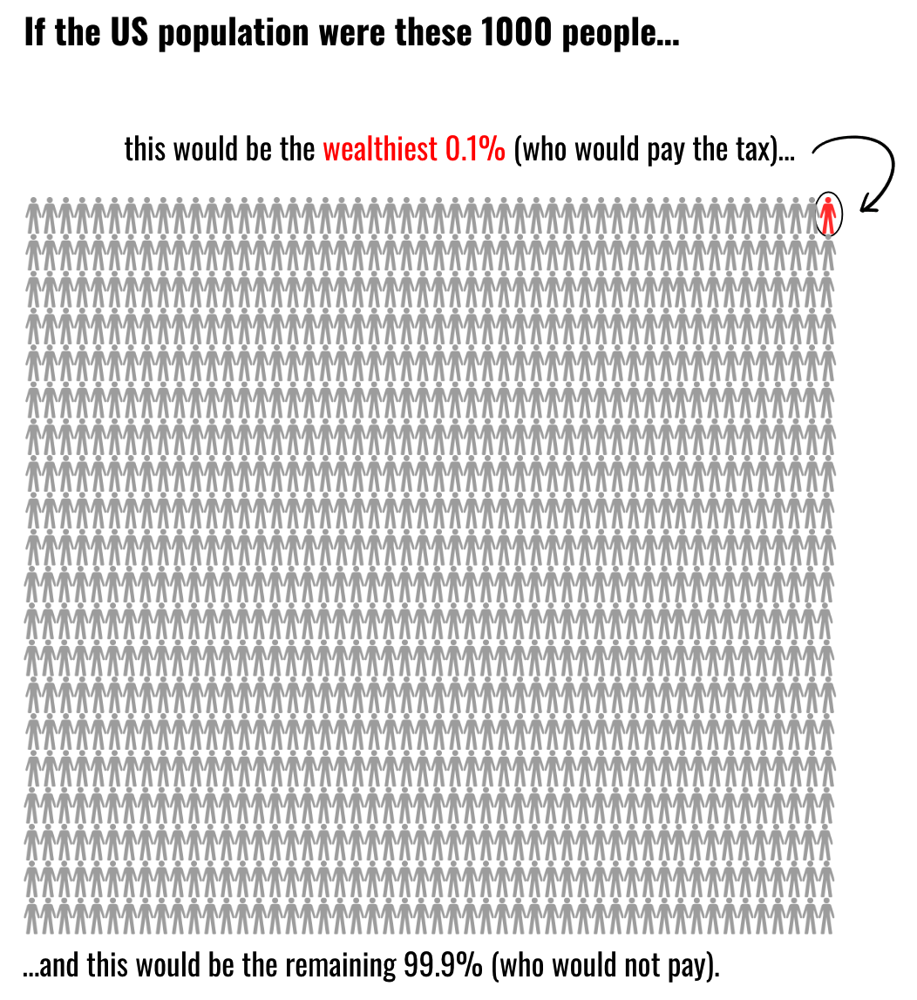

In the US, most people have little to no wealth. A tiny fraction of people have a lot of wealth.
One type of wealth tax would involve the wealthiest 0.1% of households paying taxes on their wealth.

This wealth tax would raise $3 trillion over only a decade. With that money, we could do any one of the following:
With your voice and your vote, you have the power to help raise these funds and choose how they’re spent.